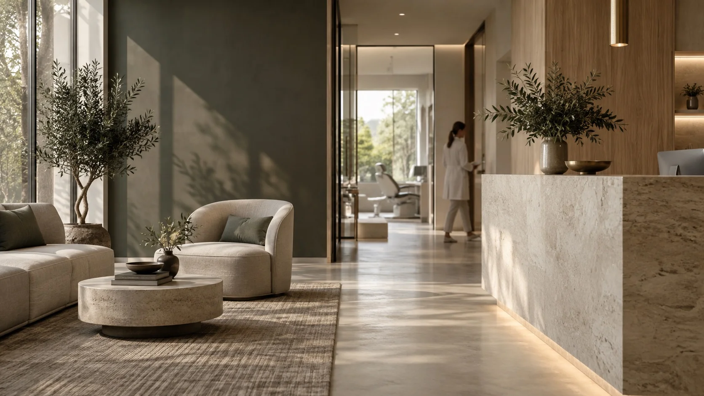
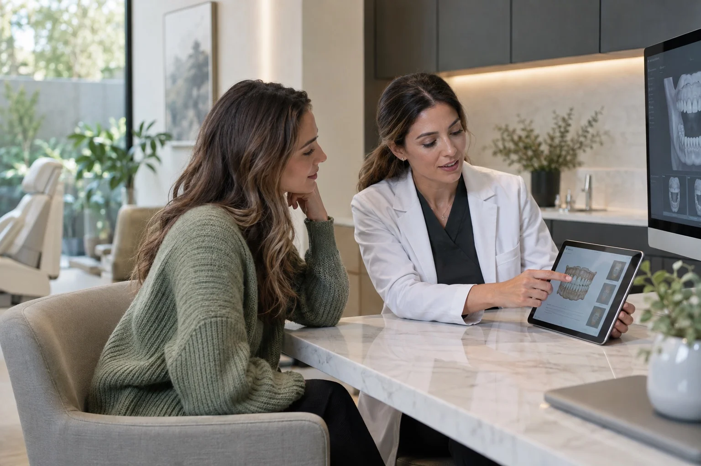
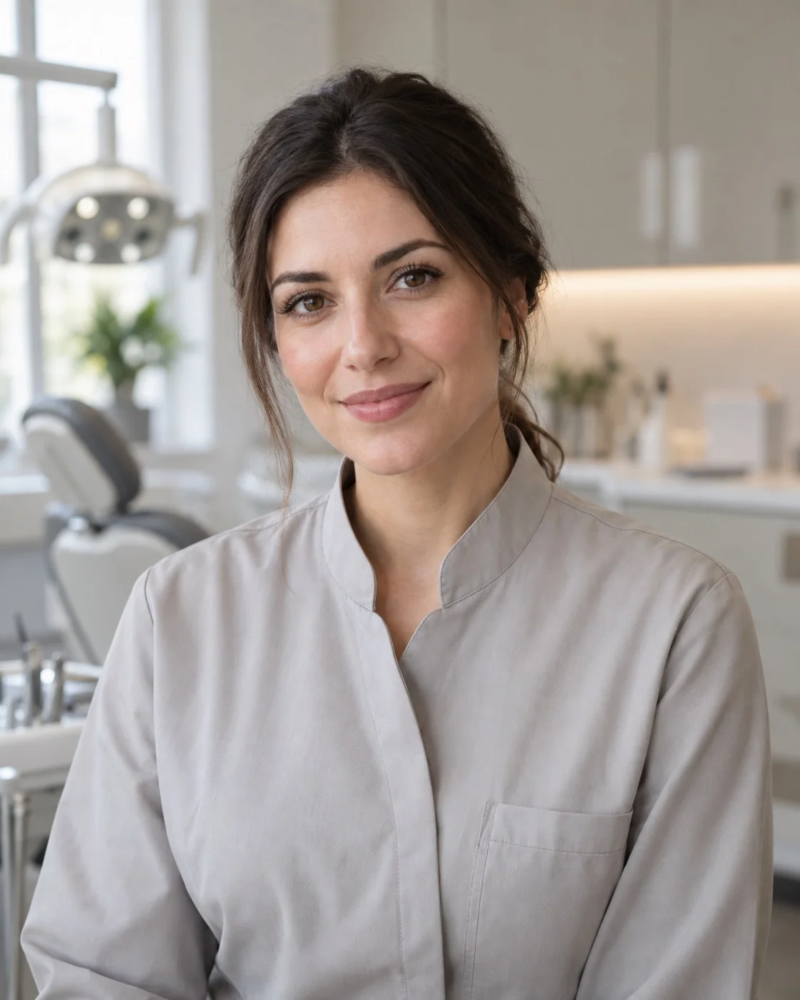
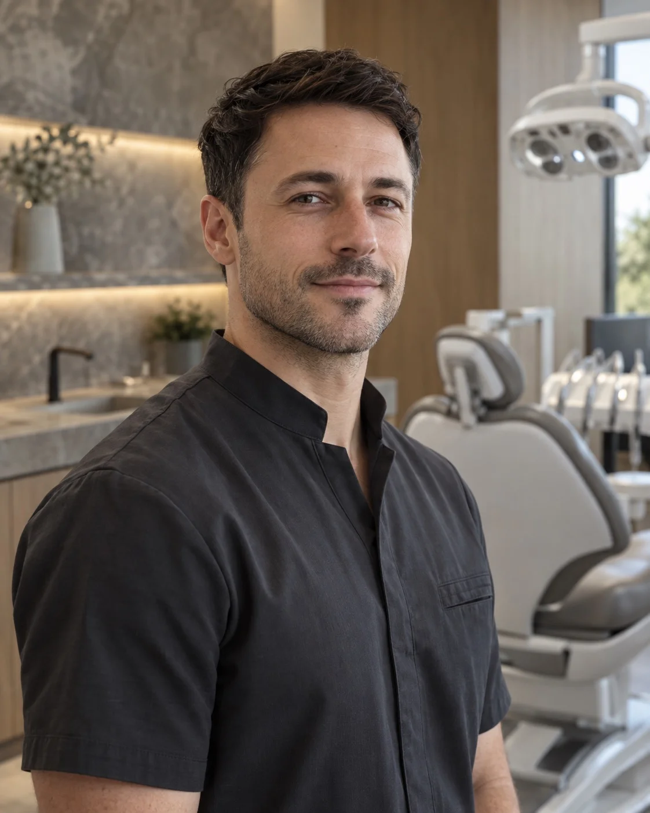
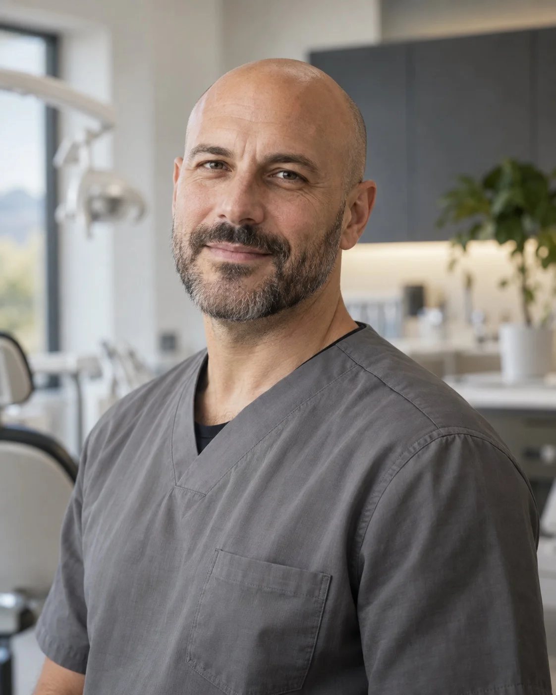
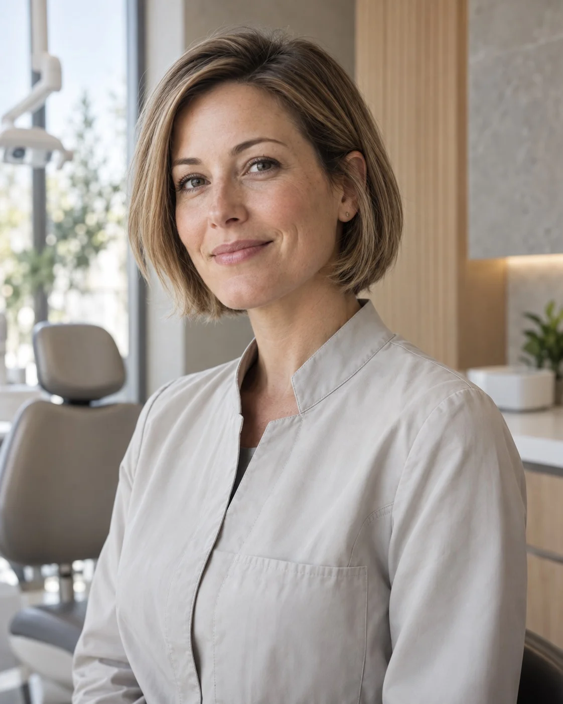
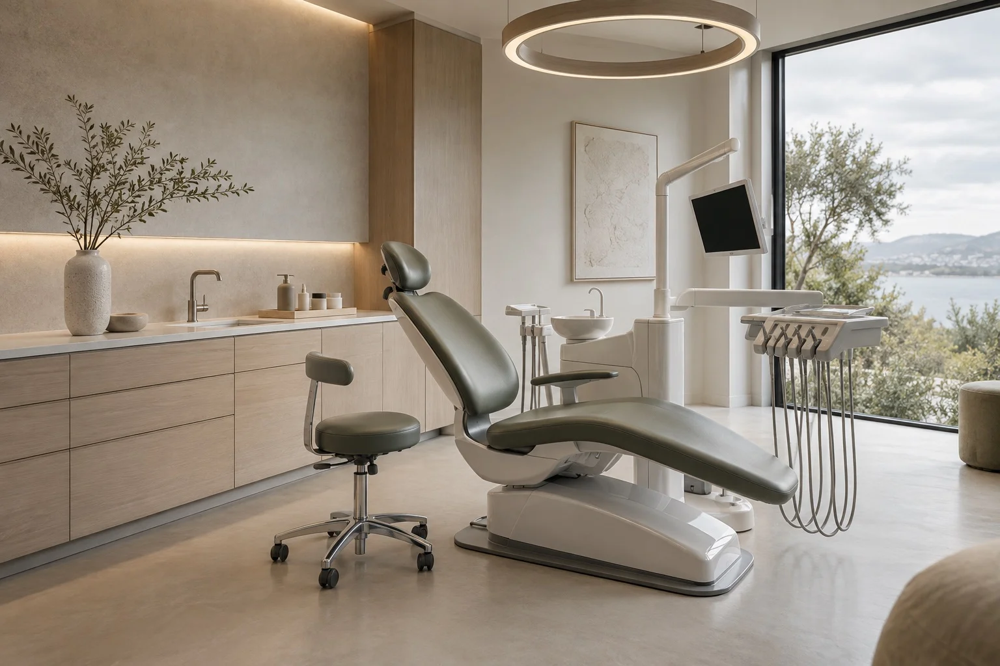

Точная диагностика
Цифровая диагностика и персональный план лечения перед началом процедур.

AUREN DENTAL / CONCEPT PROJECT
Современная стоматология, где точная диагностика, эстетика и комфорт становятся частью одного подхода к лечению.
02 / НАШ ПОДХОД
Мы соединяем медицинскую точность с вниманием к деталям — от первого разговора до понятного плана восстановления улыбки.
Цифровая диагностика и персональный план лечения перед началом процедур.
Оборудование и методы лечения, ориентированные на точность и комфорт.
Специалисты разных направлений работают над комплексным результатом.
Продуманный интерьер и внимательный сервис без ощущения обычной больницы.
03 / НАПРАВЛЕНИЯ
ШЕСТЬ НАПРАВЛЕНИЙ
ОДНА КОМАНДА
Восстановление отсутствующих зубов с индивидуальным планированием лечения.
Эстетическая коррекция формы и оттенка улыбки.
Исправление прикуса с помощью современных ортодонтических систем.
Терапевтическое лечение с сохранением максимального объёма здоровых тканей.
Комплексная профилактика и поддержание здоровья зубов и дёсен.
Восстановление функции и эстетики зубного ряда.
04 / ОСНОВНОЕ НАПРАВЛЕНИЕ
От диагностики до восстановления улыбки — лечение планируется заранее и проходит по понятному пациенту сценарию.
Получить консультацию
05 / КОМАНДА
Вымышленные специалисты демонстрационного проекта: разные направления, единый подход к заботе и ясной коммуникации.

01 / AUREN TEAMСтоматолог-терапевт
Эстетическая стоматология

02 / AUREN TEAMХирург-имплантолог
Имплантация и хирургия

03 / AUREN TEAMСтоматолог-ортодонт
Исправление прикуса

04 / AUREN TEAMСтоматолог-ортопед
Протезирование
06 / ПРОСТРАНСТВО
Мы объединили современные технологии, спокойный интерьер и внимательный подход к пациенту, чтобы визит к стоматологу перестал ассоциироваться со стрессом.

07 / ВИЗУАЛЬНЫЕ СЦЕНАРИИ
Концептуальные карточки результата — без фотографий реальных пациентов и обещаний медицинского эффекта.
Изображения представлены в рамках демонстрационной концепции сайта.
08 / МАРШРУТ
Каждый этап объясняем простым языком — без спешки, неожиданных шагов и лишней сложности.
Знакомимся, обсуждаем запрос и собираем необходимые данные.
Проводим обследование и оцениваем состояние зубов.
Формируем последовательность процедур и объясняем каждый этап.
Проводим процедуры согласно согласованному плану.
Следим за результатом и даём рекомендации по дальнейшему уходу.
09 / ГОЛОСА
Демонстрационные отзывы для portfolio-концепта.
10 / ПЕРВЫЙ ШАГ
Запишитесь на консультацию. Специалист ответит на вопросы и поможет понять возможные варианты лечения.
11 / КОНТАКТЫ
Москва
Пресненская набережная, 8
+7 (495) 000-00-00
hello@auren-dental.demo
Ежедневно
09:00–21:00
AUREN DENTAL — демонстрационный проект Verto Studio. Контактные данные вымышлены.